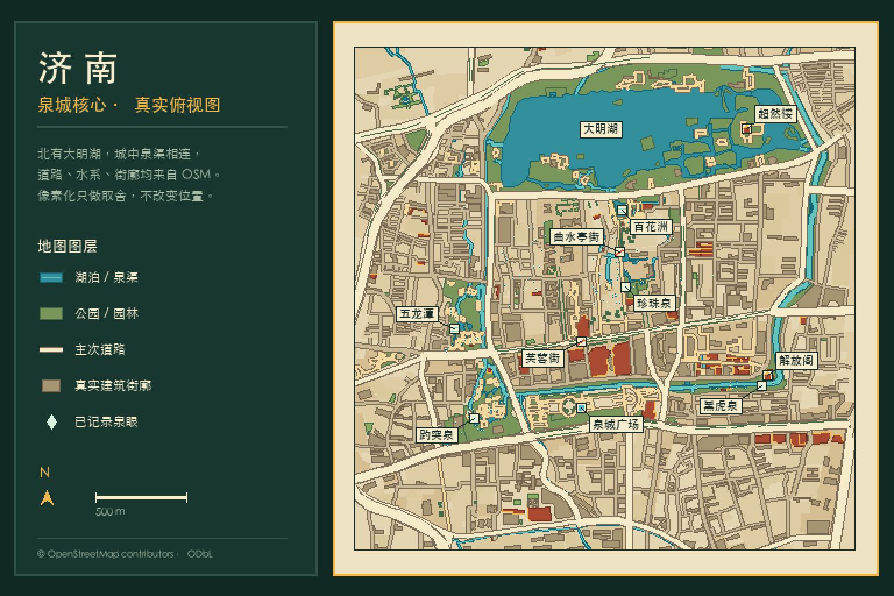
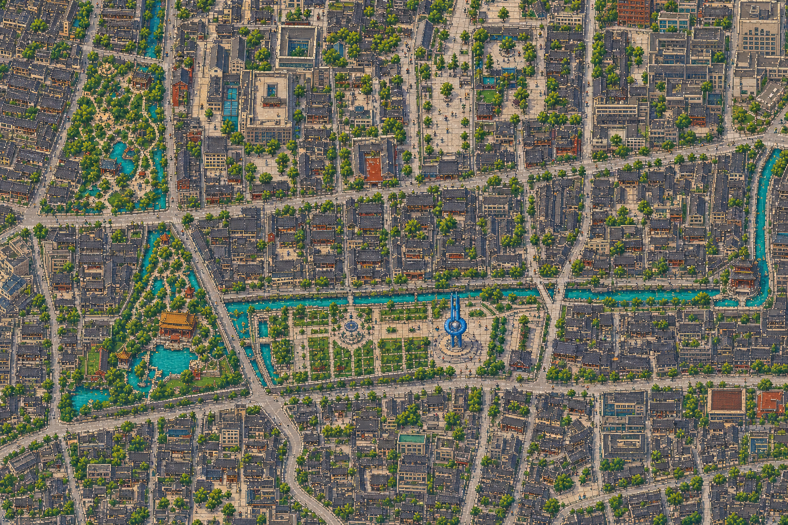
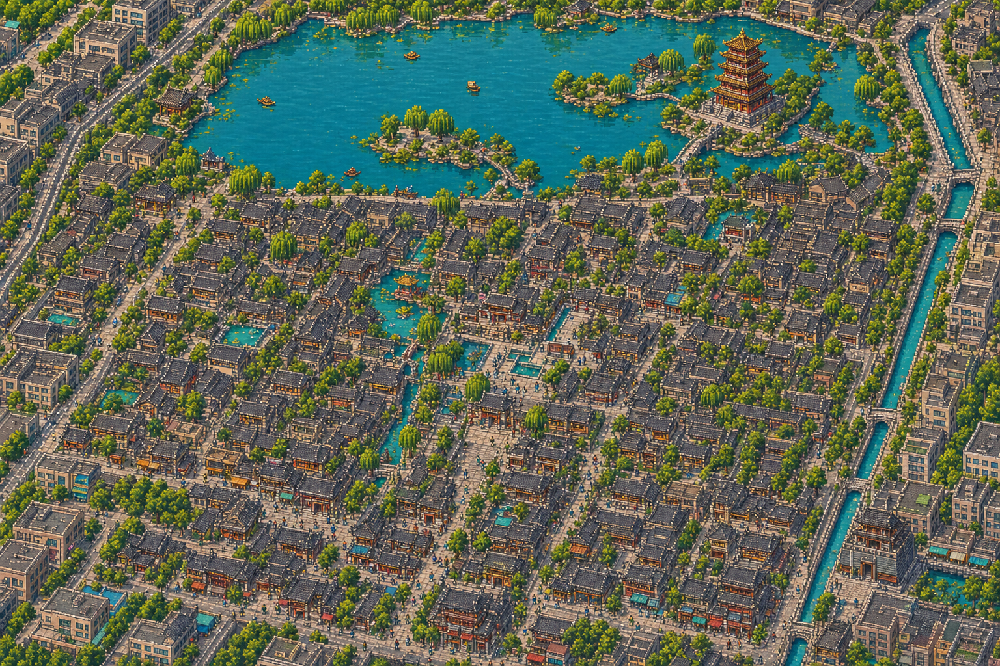
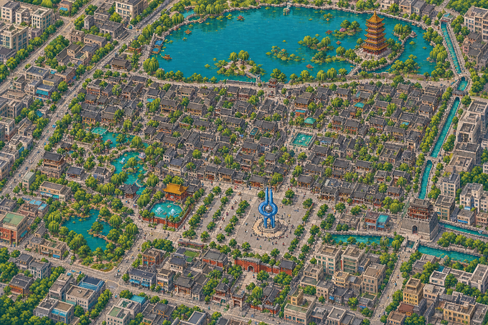
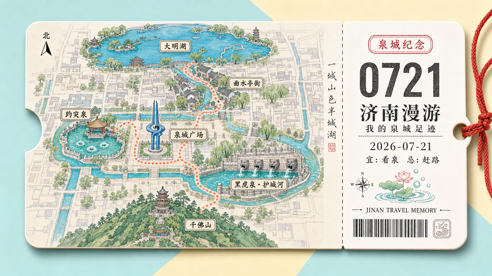

像素数字城市志
济南像素印象志
泉水如何穿过一座城
一本基于真实济南地理关系的翻页城市志。
沿着泉水的路径，从城中泉眼走到护城河与湖。
01
总览：泉水如何穿过一座城

本书路线
- 趵突泉泉从城中涌出
- 五龙潭泉从城中涌出
- 大明湖泉流进老城与湖
- 曲水亭街 · 百花洲泉流进老城与湖
- 黑虎泉 · 解放阁护城河与城市客厅
- 泉城广场护城河与城市客厅
六个地点将依次出现在后面几页。地图上的水与路，都来自真实位置关系。
02
泉从城中涌出
趵突泉 · 五龙潭
趵突泉
老城西南的泉眼之首。泉水从地下涌出，三股泉涌常年在城中池内翻涌，池水清澈见底。
五龙潭
趵突泉北侧的一片水潭。周边泉水汇入，水面开阔，老柳依岸，是城中另一处泉聚而成的水。
泉不是城外的景点，它从城里涌出来。
03
泉流进老城与湖
大明湖 · 曲水亭街 · 百花洲
曲水亭街
泉水沿街边的水渠流过灰瓦老屋与石桥，老街临水而居，水是这条街的生活主线。
百花洲
大明湖与老城之间的一片水院。泉水在此汇入，荷叶临水，民居依岸而建。
大明湖
老城北面的湖。泉水和护城河的水在此汇聚，开阔的湖面成为一城湖光。
水穿过街巷，最后成为老城北面的湖。
04
护城河与城市客厅
黑虎泉 · 解放阁 · 泉城广场
黑虎泉
护城河南岸的泉眼。泉水从石虎口中吐出，三股出水直接汇入护城河。
解放阁
黑虎泉旁的老城墙台，立在护城河岸，古城的一面留到了今天。
泉城广场
位于趵突泉与黑虎泉之间的城市广场，泉标立在广场中央，是今天的城市客厅。
泉沿护城河继续流，古城与今天的城市生活在这里相遇。
05
末页纪念票

已看过 7 个核心地点
- 趵突泉
- 五龙潭
- 大明湖
- 曲水亭街 · 百花洲
- 黑虎泉
- 解放阁
- 泉城广场
我记住了：泉—城—湖是一体的